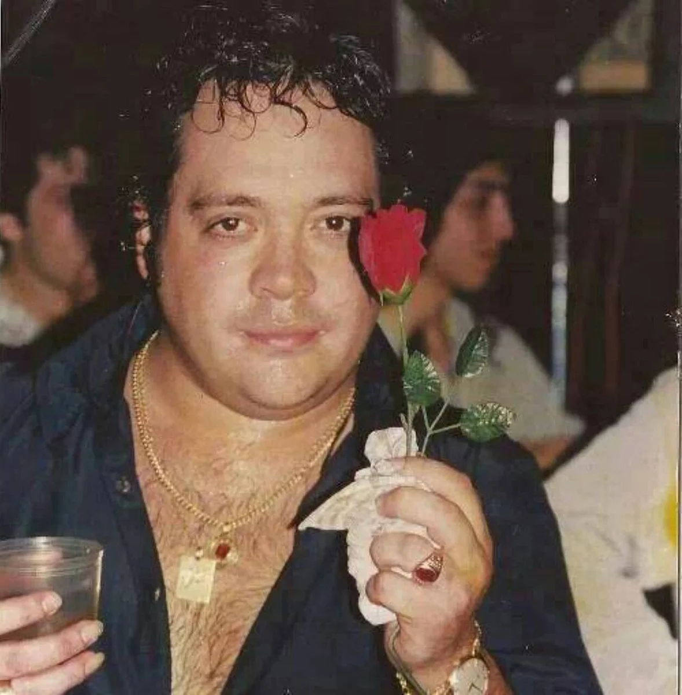

Leo Mattioli "El león santafesino"
Biografia
Leonardo Guillermo Mattioli nació en el año 1972, en la provincia de Santa Fe, Argentina. Ya de pequeño Leo mostraba su interés por la música, pero siempre inclinándose por aquella que despertaba sentimientos profundos, y luego por el estilo de la cumbia colombiana. A los 20 años de edad, Leonardo se incorpora como cantante en el "Grupo Trinidad", con quienes alcanzó rápidamente la fama y reconocimiento, con un estilo romántico que conquistabas almas enamoradas en cada presentación. Participó en 6 trabajos discográficos junto al "Grupo Trinidad", y también produjo 2 compilados con su estilo único, que han llegado a la cima de la fama sin escala, y el múscio ha sido reconocido por el público como uno de los más románticos.
Discografia solista
- Un homenaje al cielo (2000)
- En directo, piel con piel (2001)
- Ese soy yo (2001)
- Ay amor, corazón gitano (2002)
- Sin palabras (2002)
- Canciones románticas con un toque de "Ay, amor" (2003)
- Creciendo (2004)
- Aún sigue la lección (2004)
- El señor del amor (2005)
- Esto... es romántico (2006)
- Acústico (2006)
- Amor a mi manera (2007)
- El rey del amor (2008)
- En vivo en el Teatro Gran Rex (2008)
- El amor y la pasión nunca morirán (2009)
- Ayer, hoy y siempre romántico (2010)
Discografia con Grupo Trinidad
- La gran tentación (1994)
- Un ratito (1996)
- Tropibaile santafesino vol. 2 (1996)
- Más románticos que nunca (1997)
- Más caliente que nunca (1998)
- Más Trinidad que nunca (1999)
- Juntando las almas (2006)
Grandes exitos:
- Si te agarran las ganas
- Le pido a Dios
- Perdoname
- Que lindo es el amor
- Tramposa y Mentirosa
Falecimiento:
El 7 de agosto de 2011, faltando 6 días para su cumpleaños número 39, antes del mediodía, sufrió un paro cardiorrespiratorio en el hotel Gala de la ciudad de Necochea (provincia de Buenos Aires). Fue asistido por su hijo. Cuando llegó la ambulancia que lo trasladaría al Hospital Municipal Dr. Emilio Ferreyra, su cuerpo se encontraba ya sin vida. Fuentes médicas declararon que su deceso se produjo a las 12:07.